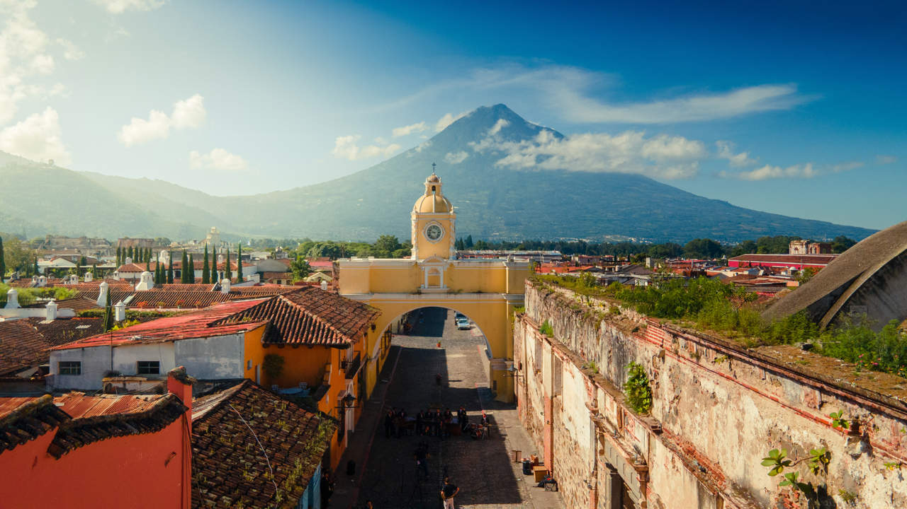
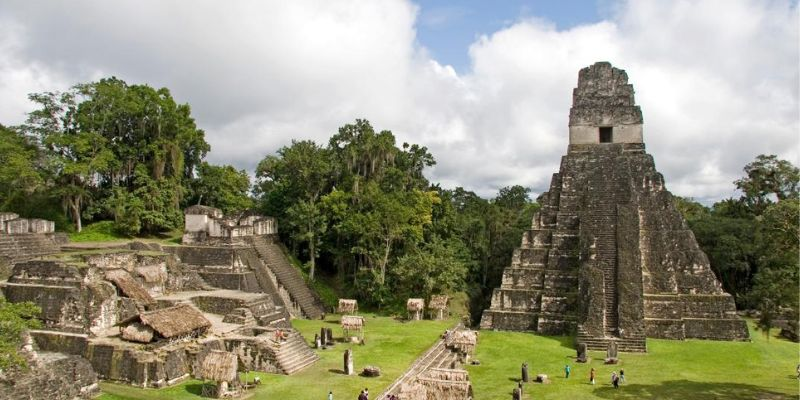
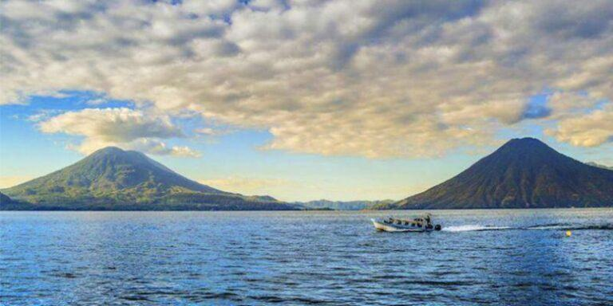
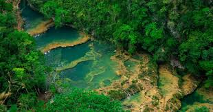
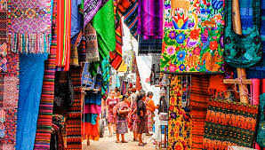

Guatemala es un pais lleno de cultura, Naturaleza y tradiciones unicas en centroamerica.

Declarada patrimonio de la humanidad por la UNESCO, destacada por su arquitectura colonial, calles empedradas y ruinas históricas rodeadas por tres imponentes volcanes.

Ubicado en el departamento de Petén, Es uno de los sitios arqueológicos y centros ceremoniales más importantes de la antigua civilizacion maya, inmerso en la selva tropical.

Considerado uno de los lagos más bellos del mundo, está flanqueado por imponentes volcanes y rodeado de pintorescos pueblos mayas que conservan sus tradiciones.

Un monumento natural único en Alta Verapaz, famoso por sus pozas escalonadas de aguas cristalinas color turquesa rodeadas de exuberante selva.

Reconocido como el mercado indígena más grande de Centroamérica, es el lugar perfecto para comprar artesanías, textiles tradicionales y observar el sincretismo religioso local.